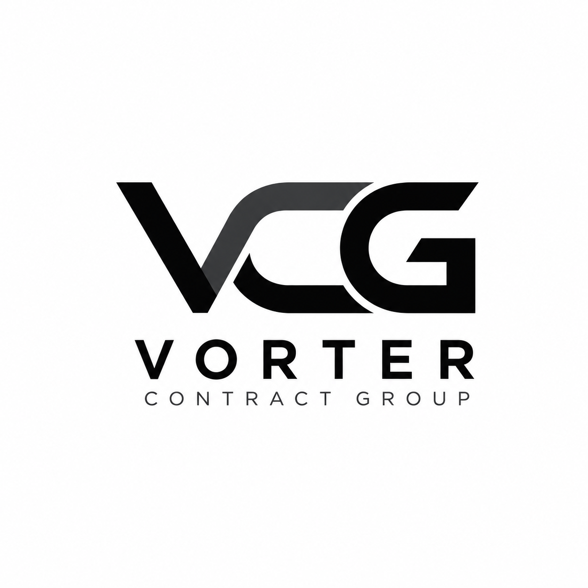

Government
Federal, state, and local procurement and contract support across the United States.
PUBLIC SECTOR
Vorter Contract Group provides procurement, vendor sourcing, contract management, and project coordination for government agencies and prime contractors nationwide.
Deliver dependable government contract solutions through integrity, accountability, responsive communication, and disciplined execution.
We align each requirement with qualified partners, resources, and solutions appropriate to the scope, location, and performance needs of the project.
We source products, services, and suppliers aligned with solicitation requirements, schedule, and performance expectations.
We identify and coordinate qualified subcontractors and vendors based on scope, geography, capability, and availability.
From award through completion, we coordinate documentation, communication, deliverables, and performance obligations.
We bring together people, resources, schedules, and vendors to keep contract execution organized and responsive.
Vorter Contract Group was built around a straightforward principle: government requirements deserve dependable execution. We pursue opportunities where qualified partners, responsible pricing, clear communication, and organized contract management can produce a strong solution.
Steven leads Vorter Contract Group with more than a decade of experience supporting government contracts, procurement, vendor coordination, equipment sourcing, logistics, and project execution.
His background includes working with federal, state, and local government customers and managing the details required to move projects from initial requirement through successful delivery.
Today, Steven applies that experience to build a nationwide network of qualified vendors and subcontractors, with a focus on responsive communication, accountability, and dependable contract performance to serve federal, state and local governement customers.
Whether you're seeking dependable contract support, exploring a teaming opportunity, or interested in joining our vendor network, VORTER Contract Group is ready to discuss the requirement.